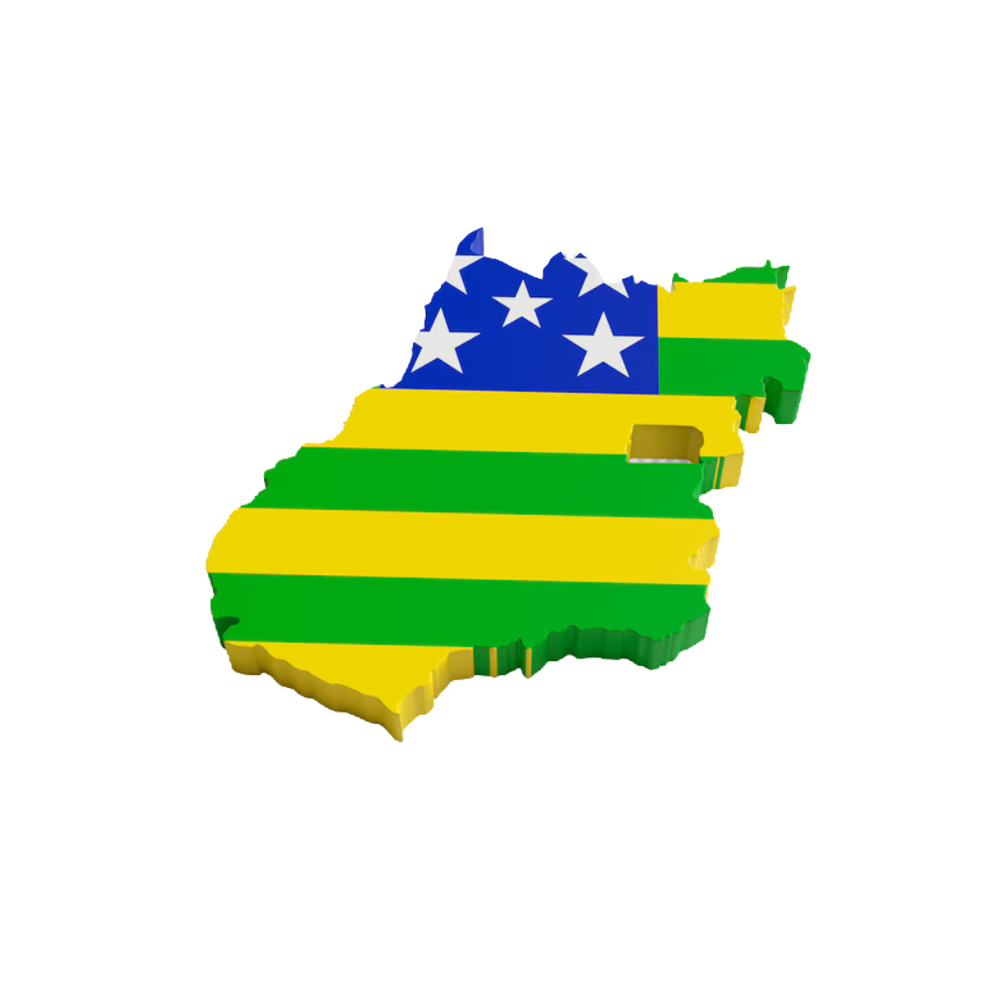

Soja
Um dos maiores produtores do Brasil. Valor da produção: R$ 43 bilhões.
Milho
Importante fornecedor para o mercado interno e externo. Valor da produção: R$ 14 bilhões.
Cana-de-açúcar
Impulsiona a indústria sucroalcooleira. Valor da produção: R$ 12 bilhões.
Sorgo
Maior produtor do Brasil, destaque para Rio Verde.
Tomate
Um dos maiores produtores do país, destaque para Cristalina. Valor da produção: R$ 937 milhões.
Alho
Produção relevante no estado. Valor da produção: R$ 712 milhões.
Outros
Algodão, arroz, feijão, trigo, entre outros.

Criação de bovinos
Um dos maiores rebanhos do país, carne de alta qualidade.
Criação de aves
Forte produção de carne de aves.
Outros
Criação de suínos e produção de leite.

Região Oeste
Composta por cidades como Rio Verde, Jataí, Mineiros e São Simão, é um polo agrícola importante, destacando-se na produção de soja, milho e pecuária de corte. Rio Verde, Jataí e Mineiros são grandes produtores de soja, com a produção crescente devido à alta demanda internacional. O milho, especialmente a safra safrinha, é o segundo grão mais cultivado na região. Jataí também se destaca na pecuária, sendo um dos maiores centros de abate de gado do estado, com foco na produção de carne bovina e leite, incluindo a exportação.
Região Central
A Região Central de Goiás, incluindo Goiânia, Senador Canedo e Aparecida de Goiânia, tem uma economia agrícola diversificada, com foco em hortifrúti para abastecer mercados urbanos, e cultivo de milho e soja em menor escala, mas com alta tecnologia. Aparecida de Goiânia se destaca na produção de leite e na pecuária de corte, com práticas intensivas e tecnológicas de manejo e nutrição. A região também adota sistemas integrados, como a integração lavoura-pecuária e lavoura-pecuária-floresta (ILPF), para melhorar a produtividade e a sustentabilidade agrícola.
Região Sudeste
A Região Sudeste de Goiás é marcada pela diversidade de suas atividades econômicas, com destaque para a agricultura, mineração e pecuária. As principais culturas agrícolas são a soja e o milho, especialmente em grandes propriedades rurais. Catalão, por exemplo, combina agricultura com mineração, sendo uma importante produtora de soja e milho, além de abrigar depósitos de nióbio. A pecuária de corte também se destaca, com boas pastagens e manejo eficiente de gado.
Região Norte
A Região Norte de Goiás, composta por cidades como Uruaçu, Niquelândia, Formosa e Cidade de Goiás, tem foco na produção de grãos, especialmente soja e milho, com a soja sendo cultivada em larga escala. A fruticultura também é importante, com cultivo de frutas como goiaba, abacaxi e manga, principalmente nas cidades próximas ao Distrito Federal. Embora a pecuária de corte não seja tão significativa quanto em outras regiões, tem se expandido, especialmente no entorno de Formosa.
Região Sudoeste
É caracterizada pela agricultura irrigada e pela pecuária de leite. Destaca-se no cultivo de frutas irrigadas, como uva e melão, além de ser uma importante produtora de leite, atendendo tanto ao consumo interno quanto à indústria de laticínios. Também há cultivo de grãos, como milho e soja, com algumas propriedades adotando sistemas integrados de produção.
Região do Entorno
É marcada pela agricultura diversificada e de pequena propriedade, com foco na produção de hortifrúti que abastece o Distrito Federal. Também se destacam cultivos de grãos como milho e feijão. A pecuária de leite e corte existe na região, mas com um crescimento moderado, sendo a agricultura a atividade predominante.